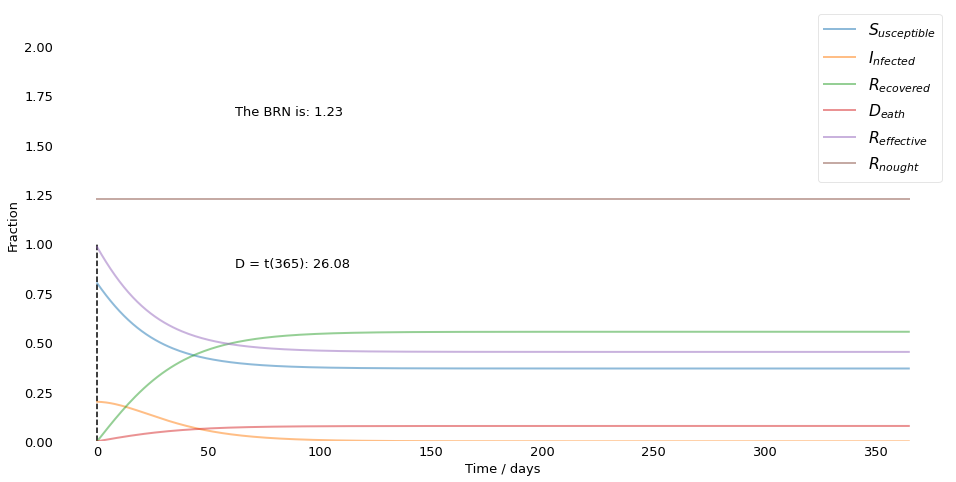

\begin{titlepage}
\centering \vspace{-40pt} \includegraphics[width=0.8\textwidth]{Frankfurt_School_Logo.jpg}\par \vspace{2.5cm}
{\scshape\huge Assignment 1 \par} \vspace{2.5cm}
{\Huge\bfseries Covic-19 Disasters \par} {\scshape\large Studying the SIRD Model \par}
\vspace{2cm} % If signature is taken might have to add space.
{\Large Yannik Suhre \par} {\Large Skyler MacGowan \par} {\Large Debasmita Dutta \par} {\Large Sebastian Sydow \par} \vspace{0.5cm}
\vfill {\large \today\par} \end{titlepage}
\newpage
\hypersetup{linkcolor=black} \tableofcontents
\newpage
Introduction¶
\label{section:Introduction}
The following document provides our solutions for the given exercises.
Question 1¶
This code is based on prior work conducted by Jan Nagler; the modications made were effectuated in order to solve the following exercise problems:
a. Derive the corresponding system of equations for S, I, R and D. E.g., \(\frac{dD}{dt} = \mu I\) but this is not the only difference to SIR. In addition, the basic reproduction number may now depend on µ as well, how?
b. Assume that the basic reproduction number \(R_0\) for B.1.1.7 is not exactly known but only the range \(R_0 \in [3.0; 4.0]\). Assume that the mortality rate µ is also not exactly known but only the range \(\mu \in [0.4\%; 4\%]\). Study how these parameter uncertainties affect the prediction of D at t = 365d.
c. Study numerically the effects of a hard versus soft lockdown (by two for you reasonable values of β), in terms of D(365d). Assume µ = 1% and a γ compatible with \(R_0\) = 4.
We will start by importing some packages that can be leveraged when solving the exercise problems.
#### Imports ####
import numpy as np
import pandas as pd
import math
from scipy.integrate import odeint
import matplotlib.pyplot as plt
from matplotlib.ticker import MaxNLocator, PercentFormatter
from matplotlib import cm
from IPython.display import display, Markdown
from mpl_toolkits.mplot3d import Axes3D
# set matplotlib to inline
%matplotlib inline
Class Explanation¶
\label{section:Class_explanation}
In order to incorporate all the different things, and to do this with as less code as possible, we will define a class. Which methods this class contains and how the different methods work, will be displayed here.
Class creation¶
\label{section:class_creation}
The overall class is called SIRD in order to make explicit what this function is used for. It is defined like
class SIRD():
"""This class alters the SIR model from Epidemiology in order
to incorporate the deaths caused by the desease"""
Classes contain different methods and attributes. A method is defined within the class context as a normal function, using the def ... notation. Be aware, that since that method is defined within the class, it is only accessable through the class, meaning we have to use the class object in order to execute it.
In order to give a class its attributes we can make use of the self. Using this name we can create and update parameters which belong to the class (how this is done exactly will be shown later). In order to have a clear overview, of how to create a class and which parameters to give it, let us explain the double underscore (dunder) function __init__(). This is the function, which will be called, when the object is instantiaded (E.g. SIRD(); the () means instantiaded in this context).
def __init__(self, N: int, I0: float, R0: float, D0: float, beta: float,
gamma: float, mu: float, recovery_in_days: int, days: int):
"""This functions adds the given parameters to the object, which
is instantiated using the SIRD class.
Within this class, we also calculate R_nought, the basic reproduction
number R_0 (pronounced R-nought) which is the average number of cases
directly generated by one case in a population where all individuals
are susceptible to infection using the formula
R_nought = beta / (gamma + mu) and we calculate S0, which displays
the number of susceptible persons, using the formula
S0 = S0 = N - I0 - R0 - D0.
Parameters
----------
N : int
Represents the populations size, if you set it to 1,
the model will ignore N and it will return fractions
I0 : float
The total number of infected people at time zero
R0 : float
The total number of recovered people at time zero
D0 : float
The total number of death at the time zero
beta : float
The contact rate, more specifically how many people
does one infected infects
gamma : float
The recovery rate, the rate of how fast infected people
recover from the desease
mu : float
The mortality rate, the rate of how many of the infected
people die
recovery_in_days : int
The days it takes to recover, this could also be
calculated using 1/gamma, but was inserted here
for easier accessability
days : int
The timeframe, how long we will model the infectious disaster
"""
Derivate function¶
\label{section:deriv}
Next we can set up the \(SIR(D)\) model. For the most part this is the function developed by Jan Nagler, albeit with some modifications that allow us to incorperate the mortility rate \(\mu\).
def _deriv(self, y, t, N, beta, gamma, mu):
"""Altered function of the SIR model,
in order to incorporate the deaths,
mu.
Parameters
----------
y : ndarray
This array contains the initial models
t : np.array
A np.array created using np.linespace in
order to model the time
N : int
The population size or 1
beta : float
The contact rate, more specifically how many people
does one infected infects
gamma : float
The recovery rate, the rate of how fast infected people
recover from the desease
mu : float
The mortality rate, the rate of how many of the infected
people die
"""
Effective reproduction number¶
\label{section:brn}
Yet another very important number when it comes to epidemiology is the effective reproduction number, which will be denoted by \(R_{effective}\). The idea behind this number is that at any given time \(t\) an unknown number of the susceptible population is immune to the disease, or the average number of new infections caused by a single infected individual at time t in the partially susceptible population [3, 4]. As soon as this number drops below one, one can speak of herd immunity. Thus \(R_e\) can be defined by \(R_0 * \frac{susceptibles}{population}\).
For our model, we can calculate this using the following method.
def _R_effective(self, subplot = False):
"""Calculates the effective reproduction number
based on the formulae given by Jan Nagler.
Parameters
----------
subplot : bool, optional
If true, it will return
the time when the BRN reaches
its maximum, by default False
"""
Ordinary differential equation¶
\label{section:ode}
Now, we will make use of the odeint() function, which integrates a system of ordinary differential equations [2]. The first argument for this function must be therefore a callable object, such as a function (e.g. a callable object is everything which can be called using ()). Its second argument is the vector with the initial conditions. Third, we have to specify the time variable; this was also done above (\(t\)) in the __init__() functon. In order to pass the function arguments to our given callable, we also need to specify the argument args with all the inputs the callable needs.
def _ode(self):
"""Integrates different ordinary differential
equations."""
Calculate \(\beta\) and \(\gamma\)¶
\label{section:beta_gamma}
In question 1.b the solution requieres us, to vary \(R_{nought}\) and \(\mu\). Since those two parameters are depended on \(\gamma\) and \(\beta\), we also have to recalculate those. Hence our class has a function for it.
def _get_beta_gamma(self, R_nought, mu):
"""Returns beta and gamma based
on recovery time and infectious power R
Parameters
----------
R_nought : float
The basic reproduction number R_0
(pronounced R-nought) which is the
average number of cases directly
generated by one case in a population
where all individuals are susceptible
to infection
mu : float
The mortality rate, the rate of how many of the infected
people die
"""
Plot \(\mu\) and \(R_{nought}\) w.r.t. cumulated deaths¶
\label{section:plot_mu_brn_wrt_cd}
Until now, we have just dealed with methods/functions which started with an underscore. Those are named private functions. These functions should not be used by anyone outside of the developer team. The usage for developing such private functions is, that those can then be used in the public functions of this class.
From here onwards, we will present our public functions. The first one is a function, which allows us to plot \(\mu\) and \(R_{nought}\) w.r.t. the cumulated deaths.
def plot_mu_bn_wrt_cd(self, R_nought, mu, subplot = True):
"""This function makes use of the private functions,
in order to calculate the fraction of deaths for
question 1.b.
Parameters
----------
R_nought : float
The basic reproduction number R_0
(pronounced R-nought) which is the
average number of cases directly
generated by one case in a population
where all individuals are susceptible
to infection
mu : float
The mortality rate, the rate of how many of the infected
people die
subplot : bool, optional
If true, it will return
the time when the BRN reaches
its maximum, by default False
"""
Plot¶
\label{section:plot}
Lastly, in order to plot all of our things, we need to define a plotting function. This is done in the next step.
def plot(self, subplot = False):
"""This functions uses as well
all of the above defined private
functions and then goes ahead and
plots a graph, which visualizes
the different functions.
Parameters
----------
subplot : bool, optional
If true, it will return
the time when the BRN reaches
its maximum, by default False
Class definition¶
\label{section:Class_def}
As shown above, a number of variables and functions are needed to solve the exercises problems. In the next cell, we will define a class that incorporates said variables/functions. The advantage of using a class is that we can easily change a given parameter and readily see/understand how doing so impacts the other parameters at play.
class SIRD:
def __init__(self, N: int, I0: float, R0: float, D0: float, beta: float,
gamma: float, mu: float, recovery_in_days: int, days: int):
self.N = N
self.S0 = N - I0 - R0 - D0
self.I0 = I0
self.R0 = R0
self.D0 = D0
self.beta = beta
self.gamma = gamma
self.mu = mu
self.R_nought = beta / (gamma + mu)
self.recovery_in_days = recovery_in_days
self.t = np.linspace(0, days, days)
def _deriv(self, y, t, N, beta, gamma, mu):
S, I, R, D = y
# dSdt = - contact rate * the susceptibles * infected / total population
# How many of the population is susceptible to the virus?
dSdt = -beta * S * I / N
# dIdt = contact rate * susceptibles * infected / total population - recovery rate * infected -
# mortality rate * infected
# How many of the susceptibles will contract the virus?
dIdt = beta * S * I / N - gamma * I - mu * I
# dRdt = recovery rate * infected
# How many of those that are infected recover excluded those that die?
dRdt = gamma * I
# dDdt = mortility rate * infected
# How many of those that are infected will die?
dDdt = mu * I
return dSdt, dIdt, dRdt, dDdt
def _R_effective(self, subplot = False):
self.t_1 = 0
for time in range(0,len(self.S)):
if self.R_nought*self.S[time]/self.N < 1:
self.t_1 = time
break
if not subplot:
display(Markdown(rf"$R_e$ = 1 after {self.t_1} days!"))
def _ode(self):
y0 = self.S0, self.I0, self.R0, self.D0
ret = odeint(self._deriv, y0, self.t, args=(self.N, self.beta, self.gamma, self.mu))
self.S, self.I, self.R, self.D = ret.T
def _get_beta_gamma(self, R_nought, mu):
self.gamma = 1./self.recovery_in_days
self.beta = R_nought*(self.gamma + mu)
def plot_mu_bn_wrt_cd(self, R_nought, mu, subplot = True):
self._get_beta_gamma(R_nought, mu)
self._ode()
self._R_effective(subplot)
self.fraction_deaths = self.D[-1]/self.N
return self.fraction_deaths
def plot(self, subplot = False):
self._ode()
self._R_effective(subplot)
fig = plt.figure(facecolor='w', figsize = (16,8))
ax = fig.add_subplot(111, axisbelow=True)
ax.plot(self.t, self.S/self.N, alpha=0.5, lw=2, label='$S_{usceptible}$')
ax.plot(self.t, self.I/self.N, alpha=0.5, lw=2, label='$I_{nfected}$')
ax.plot(self.t, self.R/self.N, alpha=0.5, lw=2, label='$R_{ecovered}$')
ax.plot(self.t, self.D/self.N, alpha=0.5, lw=2, label='$D_{eath}$')
ax.plot(self.t, self.R_nought*self.S/self.N, alpha=0.5, lw=2, label='$R_{effective}$')
ax.plot(self.t, np.full(len(self.t), self.R_nought), alpha=0.5, lw=2, label='$R_{nought}$')
ax.set_xlabel('Time / days')
ax.set_ylabel('Fraction')
ax.set_ylim(0,2.2)
ax.vlines(self.t_1, 0, 1, colors='k', linestyles='dashed')
ax.yaxis.set_tick_params(length=0)
ax.xaxis.set_tick_params(length=0)
ax.grid(b=True, which='major', c='w', lw=2, ls='-')
legend = ax.legend(fontsize="large", loc = "upper right")
legend.get_frame().set_alpha(0.5)
plt.text(0.2, 0.75, f"The BRN is: {round(self.R_nought,2)}",
transform=ax.transAxes)
plt.text(0.2, 0.4, f"D = t(365): {round(sum(self.D),2)}",
transform=ax.transAxes)
for spine in ('top', 'right', 'bottom', 'left'):
ax.spines[spine].set_visible(False)
if subplot:
x = list(map(lambda x: plt.gca().lines[x].get_xdata(), range(5)))
y = list(map(lambda x: plt.gca().lines[x].get_ydata(), range(5)))
lines, labels = ax.get_legend_handles_labels()
plt.close()
return x, y, lines, labels
else:
plt.show()
Now lets use this class, in order to instantiated it.
model = SIRD(N = 1, I0 = 0.2, R0 = 0, D0 = 0,
beta = 0.39, gamma = 0.15, mu = 0.01,
recovery_in_days = 14, days= 365)
Question 1a
¶
Initial BRN Equation
\(R_0\)=\(\frac{\beta}{\gamma}\)
The equation above is the initial way in which the the Basic Reproduction Number (BRN, as represented by \(R_0\)) was calculated. The BRN represents the average number of people one infected person will pass the virus on to. The two dependent variables are:
Contact Rate (\(\beta\)) - Describes the average number of close contacts per day of each individual in the population.
Recovery Rate (\(\gamma\)) - Describes the daily rate at which each infected individual recovers from the virus. For example we used a \(\gamma\) of 0.15, meaning we are expecting each infected individual in the population to take an average of 1/0.15 = 6.67 days to recover.
BRN Equation after Incorporating the Mortality Rate
One shortcoming of the Initial BRN Equation is that it groups all individuals who have had the virus and hence are no longer seen as being susceptible to the virus together through the recovery rate. This of course is not reflective of the reality, where a portion of the “previously infected and no longer susceptible” group would be those individuals who were killed by the virus. To capture this, the modified BRN equation below breaks down the recovery rate into two variables, a “true” recovery rate that indicates the average daily rate at which an infected individual recovers (meaning that he/she actually survives) as well as the virus’s mortality rate, as represented by \(\mu\). Below is the modified BRN equation.
\(R_0\)=\(\frac{\beta}{\gamma+\mu}\)
Note: Treating a cadaver as having no infectious potential may be erroneous, but considering how one might incorporate this the infectious potential of deceased individuals is beyond the scope of this assignment. Our model is also limited by the fact that the mortality rate does not account for natural deaths, assuming simply that all deaths were a result of the virus.
# range of r_nought:
r_nought = list(map(lambda x: x/100, range(300, 401, 25)))
# range of mortality rate:
mu = list(map(lambda x: x/1000, range(4, 41, 6)))
# create empty lists
r_nought_plot, mortalility_rate_plot, cum_deaths_plot = [], [], []
for i in r_nought:
for j in mu:
fraction_dead = model.plot_mu_bn_wrt_cd(i, j)
r_nought_plot.append(i)
mortalility_rate_plot.append(j)
cum_deaths_plot.append(fraction_dead)
fig = plt.figure(figsize=(15, 15))
plt.rcParams['font.size'] = '13'
ax = fig.add_subplot(111, projection='3d')
surf = ax.plot_trisurf(r_nought_plot,
mortalility_rate_plot,
cum_deaths_plot,
linewidth=0.5, cmap=cm.jet, antialiased=True)
ax.set_title("Impact of $\mu$ and $R_{nought}$ w.r.t. cumulated deaths")
ax.set_xlabel('$R_{nought}$', labelpad = 10)
ax.set_ylabel('Mortality rate', labelpad = 20)
ax.set_zlabel('Cumulated deaths', labelpad = 20)
ax.yaxis.set_major_formatter(PercentFormatter(xmax=1, decimals=None, symbol='%', is_latex=False))
ax.zaxis.set_major_formatter(PercentFormatter(xmax=1, decimals=None, symbol='%', is_latex=False))
ax.xaxis.set_major_locator(MaxNLocator(5))
ax.yaxis.set_major_locator(MaxNLocator(5))
ax.zaxis.set_major_locator(MaxNLocator(5))
plt.show()
Question 1b
¶
The three-dimensional graph above shows the effect of different BRNs and mortality rates on cumulative deaths over a 365 day period. Specifically, the cumulative deaths are highest when both the mortality rate and the BRN have their highest values, respectively 4% and 4 days. Of these two variables, increases in the mortality rate have a more profound impact on the ensuing deaths.
model.mu = 0.01
model.R_nought = 4
model.gamma = 0.04
betas = list(map(lambda x: x/10, range(1, 10, 1)))[::-1]
# f, axs = plt.subplots(1, 3, figsize=(15,7))
# i = 1
cum_deaths, beta = [], []
for infection_rate in betas:
model.beta = infection_rate
model.R_nought = model.beta / (model.gamma + model.mu)
fraction_dead = model.plot_mu_bn_wrt_cd(model.R_nought, model.mu)
cum_deaths.append(fraction_dead)
beta.append(infection_rate)
fig = plt.figure(figsize=(16, 8))
ax = fig.add_subplot(1,1,1)
plt.plot(beta, cum_deaths)
plt.title(r"Number of cumulated deaths w.r.t. to $\beta$")
ax.yaxis.set_major_formatter(PercentFormatter(xmax=1, decimals=0, symbol='%', is_latex=False))
plt.xlabel(r"$\beta$")
plt.ylabel("Cumulated deaths")
plt.show("Cumulated deaths")
Question 1c
¶
The graph above illustrates cumulative deaths over a one year period using different values for the contact rate, meant to portray different lockdown scenarios. As these graphs show, cumulative deaths are greatest when the contact rate is largest, as a larger contact rate increases the virus’s BRN, thereby increasing the extent to which it is disseminated throughout the general population.
One obvious feature of this graph is that the cumulative deaths increase rapidly as the contact rate rises to 30%, promptly maxing out at approximately 12% thereafter. In terms of the extent of lockdown required, this graph shows it is absolutely critical to keep the beta as low as possible, and that the beneficial effects of reducing the contact raddte have are much more profound before the contact rate hits 20%. In fact, the maxing out of the cumulative death rate around 12% presumably reflects a scenario in which the population no longer has a significant amount of susceptible persons, due to immunity built-up through exposure to the virus as well as the deceased persons.
Note: Another potential limitation of our model is the assumption that those who were exposed to the virus and fought it off are no longer susceptible to it. Our understanding is that this assumption is true for some viruses but not others. There may also be a grey area, where previous exposure to the virus makes one less susceptible to it, without making that individual completely unsusceptible. Anything more than a cursory mention of these epidemiological factors is beyond the scope of this assignment however.
Questions
Should we use the same settings for gamma and mu here that we did earlier on (0.15 and 0.01)?
model.plot()
$R_e$ = 1 after 0 days!
Question 1b,c
¶
As shown by the preceeding graph, yes it is possible to derive and plot the effective reproduction number, R, as a function of time, given otherwise fixed parameters. Indeed doing just that is the purpose of the R_effective() function defined in the SIRD class above.
Questions
For me at least it’d be helpful to understand how the above graph works, bzw. in terms of how it plots R_effective as a function of time.
Should we interpret the graph at all?